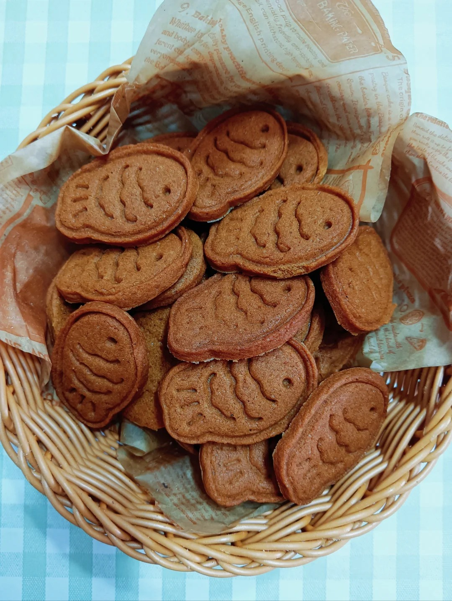

焦糖饼干


焦糖饼干(Speculaas或Speculoos)是有着至少400年历史的欧洲传统食物，在比利时和荷兰广受欢迎。这种香脆的饼干由各种香料制成，包括肉桂，白胡椒粉，姜，小豆蔻，肉豆蔻和丁香。 这种曲奇饼干也是圣诞节期间的节日甜点。 圣尼古拉斯(圣诞老人的原型)会在12月6日前一个晚上拜访在比利时和荷兰的家庭，为乖巧的孩子们留下糖果和礼物。除了speculaas，他还会留下橘子和巧克力。1932年，在比利时的一个叫Lembeke的小镇， 一个名叫“布恩”(Bonne)的面包师烤出了他的第一块焦糖饼干，并将其命名为“Lotus",取莲花的纯洁之意。1956年，布恩开始用焦糖饼干配一小杯咖啡以吸引顾客。咖啡可以增强饼干的香甜，饼干可以提升咖啡的醇厚。
制作方法：